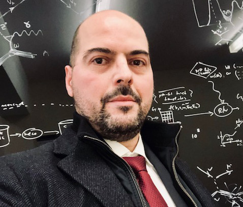
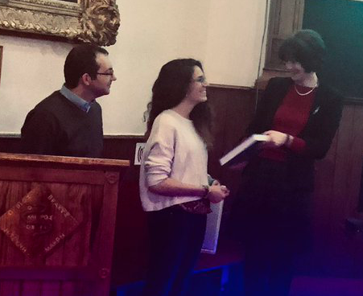
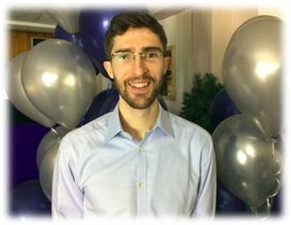

2018/12/19: Contributions to NuPhys2018
Two PhD students of our group presented well-received posters in
NuPhys2018, held at the Cavendish Centre in London.
Francis Bench presented his work on
T2K Three-Flavour Oscillation Analysis for the Determination of δCP,
whereas Rhiannon Jones presented her work on
Muon-Neutrino Charged-Current Zero-Pion Event Selection in SBND.
2018/12/18: A Professorship for Costas!

Costas Andreopoulos was awarded a Chair of Experimental Particle Physics
for outstanding contributions to the Department and advancement of physics.
Congratulations Professor Andreopoulos!
2018/12/14: A graduate student award for Julia!

Congratulations to our student Julia Tena Vidal
for receiving the Liverpool HEP Leo Carroll award for outstanding performace
during her first year of post-graduate studies. Awesome work Julia!
2018/12/10: Funding success - European Space Agency tender
The European Space Agency has awarded €200k to our group and to GMV Innovating Solutions
for a preliminary exploration of the innovative and disrupting technological concept of
Positioning, Navigation and Timing (PNT) applications based on neutrinos!
2018/12/03: Funding success - Liverpool GTA funding for a PhD studentship
Our group's proposal for Liverpool GTA funding for a new PhD studentship aiming at
resolving the light-sterile neutrino anomalies using SBN data
analysis was succesfull! We invite applications from suitably qualified candidates.
2018/12/03: Chris' PhD thesis defense

Congratulations to our student
Chris Barry for succesfully defending his PhD thesis work titled
`Joint Analysis of Neutrino and Antineutrino Data from the T2K Experiment
and Indications for Charge-Parity (CP) Violation'.
Well done Dr. Barry!
2018/12/29: Contribution to the H2020 Neutrino Oscillations Workshop Costas Andreopoulos delivers a talk on the
`GENIE3'
at the H2020 Neutrino Oscillations Workshop, Valencia, Spain.
2018/10/24: Contribution to newly-published Phys.Rev.Lett paper!
Publication of
Search for CP Violation in Neutrino and Antineutrino Oscillations by
the T2K Experiment with 2.2E+21 Protons on Target as
Phys. Rev. Lett. 121, 171802.
The paper includes important contributions from the
VALOR analysis
which is being developed by our group since 2010!
2018/10/15: New SBN leadership roles for Costas and Marco Costas Andreopoulos has been appointed
SBN Systematics and Oscillation Sensitivity WG co-convenor,
together with Daniele Gibin (Padova), whereas
Marco Roda has been appointed
Neutrino Generator WG co-convenor,
together with Jarek Nowak (Lancs).
Liverpool is heavily invested and has major leadership roles in the Fermilab SBN programme.
2018/10/16: Contributions to NuINT18
Our group is well-represented in the
12th International Workshop on Neutrino-Nucleus Interactions in the Few-GeV Region (NuINT18),
held at GSSI, L'Aquila, Italy.
Our post-doc Marco Roda delivers an overview talk on
`GENIE v3', the first major release of the popular event generator in a more than a decade,
while our student Julia Tena Vidal presents a talk on the
`New physics tunes in GENIE v3'.
2018/10/13: More contributions to NuSTEC DIS Workshop Costas Andreopoulos delivers a talk on the
`GENIE neutrino-induced hadronization model'
at the NuSTEC Workshop on Shallow- and Deep-Inelastic Scattering, held at GSSI, L'Aquila, Italy.
2018/10/11: Contributions to NuSTEC DIS Workshop
Our student Julia Tena Vidal delivers a talk on the
`Tuning of pion production in GENIE v3'
at the NuSTEC Workshop on Shallow- and Deep-Inelastic Scattering, held at GSSI, L'Aquila, Italy.
The talk summarises the excellent work completed by Julia in the first year of her PhD!
2018/10/01: Welcoming a new PhD student in our group
A warm welome to our new PhD student Thomas Ham
who will be carrying out research in the Fermilab SBN programme!
2018/08/20: Important new Departmental role for Costas Costas Andreopoulos has been appointed
Deputy Director for Equality and Diversity
and will assist Prof. Tim Veal in this crucially important role,
shaping up the REF and TEF environment, and contributing effectively
to the implementation of the Liverpool 2026 strategy.
2018/07/20: A Long Term Attachement to support SBND
Good luck to our PhD student Rhiannon Jones who
is starting her year-long LTA (Long Term Attachment) at Fermilab for work on the SBN programme!
Rhiannon's LTA is fully funded by STFC.
2018/07/11: An important higher-education teaching award/qualification for Costas
Congratulations to Costas Andreopoulos for
the award of a Fellowship of the
Higher Education Academy (HEA),
recognizing excellence and commitmment in teaching and learning in the higher education sector.
2018/06/07: Contributions to Neutrino2018
Our group had a strong presence
in Neutrino 2018 in Heidelberg, Germany -
The largest gathering of neutrino physicists to date with more than 800 participants!
Five excellent posters were presented by our group in this conference:
Our postdoc Steve Dennis described the
VALOR neutrino oscillation fit,
while our PhD student Francis Bench presented
updated T2K electron-antineutrino appearance results from his VALOR-based analysis.
Our postdoc Marco Roda highlighted new results
from our global analysis of neutrino scattering data and the new physics
tunes deployed in the latest release of the GENIE neutrino generator.
Finally, our PhD students
Rhiannon Jones and Julia Tena Vidal
described some of the outstanding progress in our preparations for charged current zero-pion and
single-pion measurements in SBND. Congratulations to all!
2018/06/22: Our new PhD students pass their first-year viva
Congratulations to our PhD students Julia Tena Vidal (SBN / GENIE)
and Jaggar Henzerling (SBN / Deep Learning) for passing their
first year PhD viva!
2018/06/22: A new SBND role for Costas Costas Andreopoulos was appointed to serve in the
and SBND Speakers Committee.
2018/02/13: A seminar on GENIE
Our post-doc Marco Roda presents a talk on
`GENIE global tunes for LBL experiments -
A first application: global fit of CC0π datasets'
at the Cavendish HEP Seminar in Cambridge, UK.
2017
2017/12/21:
Our PhD student Francis Bench presents a poster
on our VALOR`T2K Three-Flavour Oscillation Analysis for the Determination δCP'
at the NuPhys2017 conference in London, UK.
2017/10/21:
Our post-doc Marco Roda delivers a seminar on
`GENIE global tunes for LBL experiments -
A first application: global fit of CC0π datasets'
at the University of Bologna, Italy.
2017/10/15:
This year our group will offer two MPHYS research projects on
Deep Learning applications for LArTPC event reconstruction:
Our warm welcome to 4th-yr Reece Shaw
and Josh Warren who will be joing us!
2017/10/01:
A warm welcome to our two new PhD students Julia Tena Vidal
and Jaggar Henzerling!
Julia and Jaggar will be carrying out their research in the Fermilab SBN programme
and will help develop the GENIE global analysis of neutrino scattering data
and applications of Deep Learning for liquid Argon TPC event reconstruction.
2017/09/27:
Our post-doc Marco Roda delivers a talk on
`GENIE model and global fit to neutrino scattering data'
at the 19th Intl' Workshop on Neutrinos from Accelerators
(NUFACT17) in Uppsala, Sweden.
2017/09/15:
Congratulations to our PhD student Rhiannon Jones for winning the
poster competition at the annual STFC HEP Summer School!
2017/09/14:
Our post-doc Marco Roda
delivers a Fermilab NPC seminar on
our `Global Analysis of Neutrino Scattering Data and GENIE tunes'.
2017/09/01:
Congratulations to Costas Andreopoulos for receiving an extension of
his IPPP Associateship Award!
2017/08/04:
Press release
on the T2K hints for CP invariance violation by neutrinos!
Our group played a key role in this 3-flavour oscillation result through the development of the
VALOR analysis,
and our PhD student Chris Barry was a lead analyzer.
This beautiful and world-leading result will be presented in detail in Chris' PhD dissertation!
2017/07/06:
Costas Andreopoulos delivers a lecture on
`Neutrino Monte Carlo Generators' at the
MCnet Monte Carlo School in Lund, Sweden
2017/06/22:
Congratulations to our PhD students Rhiannon Jones (SBN)
and Francis Bench (T2K) for passing their
first year PhD viva!
2017/05/16:
Publication of the DUNE Near Detector Task Force (NDTF) report
(DUNE-doc-1792)
co-authored by Costas Andreopoulos
and our post-docs Steve Dennis and George Christodoulou.
Our group played a crucial role in this effort, co-developed the simulation of the High-Pressure Gaseous Argon
Time Projection Chamber (HPGArTPC) option for the DUNE Near Detector (ND), and provided the first end-to-end 3-flavour
oscillation analysis for DUNE for the evaluation of all ND design options.
2017/05/13:
Costas Andreopoulos delivers a talk on
`Neutrino Cross-Sections' at the
Conference of Science at the Sanford
Underground Research Facility (CoSSURF), in Rapid City, US.
Our PhD student Rhiannon Jones presented a related poster on our
`Global Analysis of Neutrino Scattering Data and GENIE tunes'.
2017/06/29:
Costas Andreopoulos presents the
`Near Detector of the Fermilab Short-Baseline Neutrino (SBN) Programme',
while our post-doc Steve Dennis reports on the status of
`Neutrino Interaction Systematics for the T2K Oscillation Analysis',
at the 11th Intl' Workshop on Neutrino-Nucleus Interactions
in the Few-GeV Region (NuINT17) in Toronto, Canada.
2017/05/15:
Congratulations to our PhD student Rhiannon Jones
and post-doctoral researcher Steve Dennis
who were awarded $1550 each by the Universities Research Association (URA)
to present their work on the GENIE global analysis of scattering data
and on the VALOR neutrino oscillation analysis,
at New Perspectives at Fermilab.
They were 2 only 11 early stage researchers who received funding by URA.
The URA is a consortium of 90 leading research-intensive universities in US, Canada, Japan, Italy and the UK.
2017/04/19:
Costas Andreopoulos
delivers a talk on the
`Impact of Neutrino Interaction Uncertainties on VALOR Oscillation Fits'
at the Topical Meeting on Neutrino-Nucleus Scattering in Durham, UK.
2017/04/15:
Congratulations to our PhD student Rhiannon Jones
who received a $600 travel grant to present her work on SBND and
at the Conference on Science at the Sanford Underground Research Facility (CoSSURF17).
2017/04/04:
Costas Andreopoulos delivers a talk on
`Neutrino-Nucleon/Nucleus Interaction Measurements at the Few-GeV Energy Scale'
at the 25th International Workshop on Deep Inelastic Scattering
and Related Topics (DIS17) in Birmingham, UK.
2017/03/21:
Costas Andreopoulos presents an
`Evaluation of Systematic Constraints and CP Symmetry Violation Sensitivity
with the High-Pressure Gaseous Argon Time Projection Chamber (HPGArTPC) Near Detector Concept' at
the 2nd Workshop on Neutrino Near Detectors based on gas TPCs, at CERN.
2017/03/07:
Costas Andreopoulos presents the
`Latest Results from the T2K Experiment on CP Violation'
at the Cavendish HEP Seminar in Cambridge, UK.